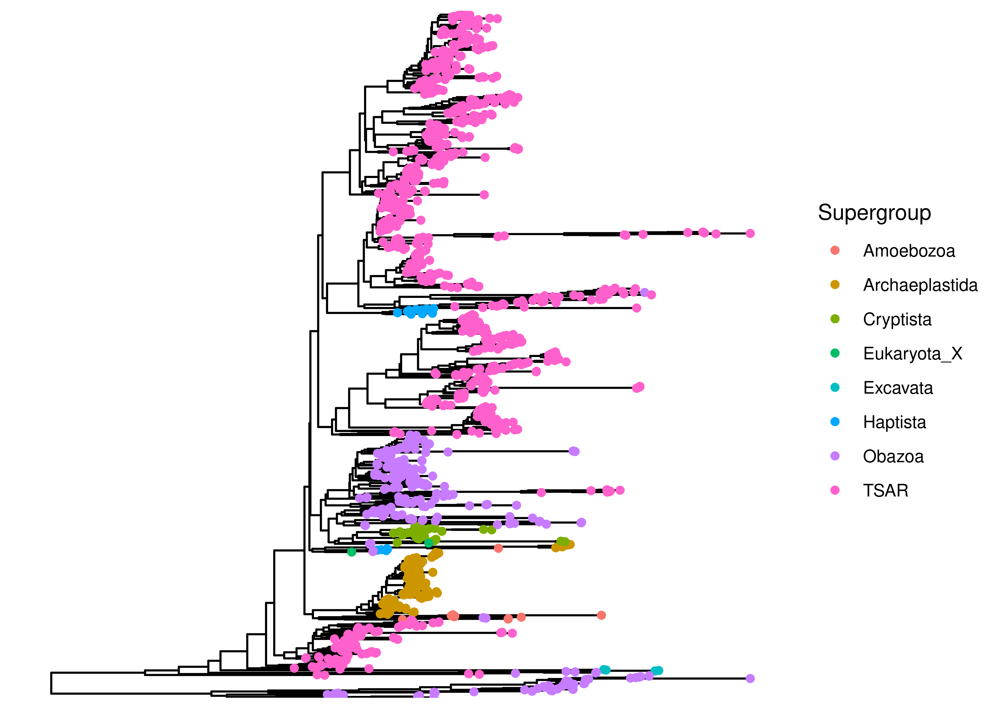
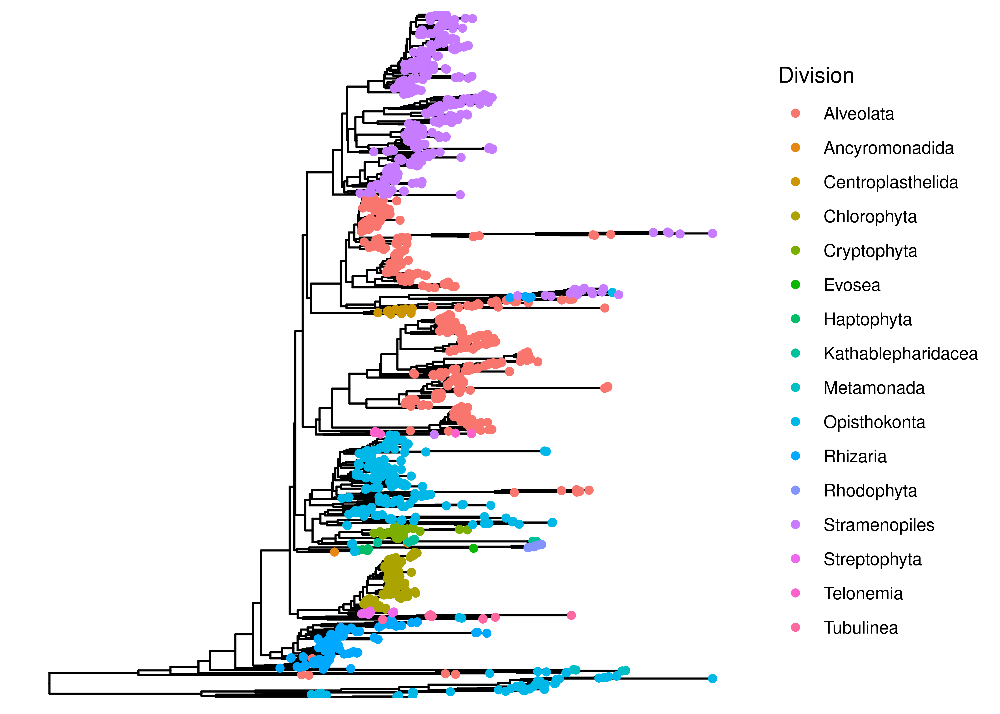
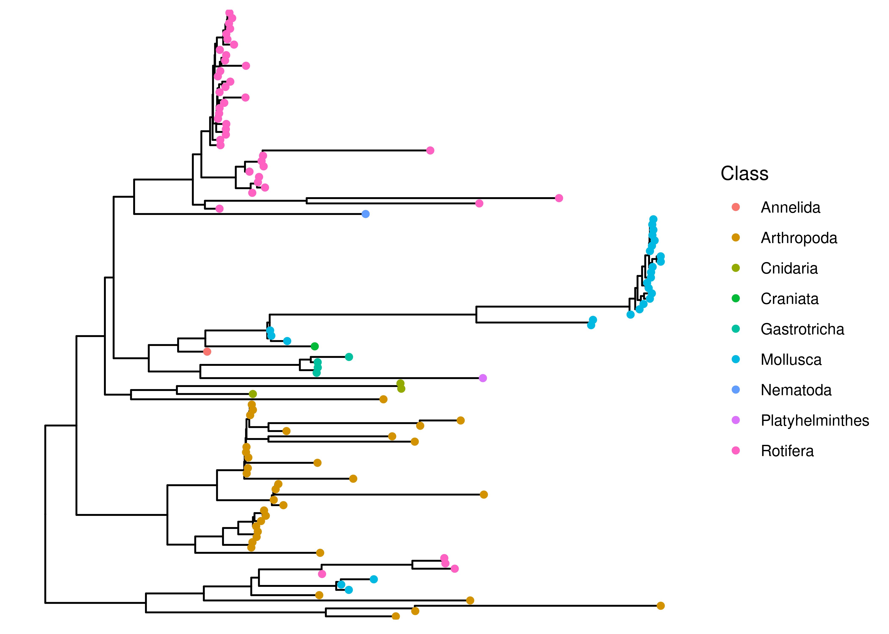

# Load Packages
pacman::p_load(phyloseq, ggtree, patchwork, tidytree, phytools, tidyverse, install = FALSE)
# load colors and shapes
source("code/R/plotting_aesthetics.R")Build a Phylogenetic Tree of Eukaryotic Sequences
Purpose of this document
Here, I build a phylogenetic tree, for later use in phylogenetically weighted richness and distance measures.
The goal of this document is to create a phylogenetic tree from the processed data and add it to the phyloseq object.
Load Packages and Functions
Load data
# Load in the raw_phyloseq data from DADA2_workflow.Rmd
load("data/03a_Eukaryotic_Errors_and_Contamination/preprocessed_euk_physeq.RData")
preprocessed_euk_physeqphyloseq-class experiment-level object
otu_table() OTU Table: [ 1455 taxa and 73 samples ]
sample_data() Sample Data: [ 73 samples by 6 sample variables ]
tax_table() Taxonomy Table: [ 1455 taxa by 11 taxonomic ranks ]Write ASV Fasta file
# first pull taxonomic table from phyloseq object
# contains ASV and sequences
tax_table <- preprocessed_euk_physeq@tax_table %>% as.data.frame() %>%
select(ASV, ASVseqs)
# add > symbol to ASV names for file formatting
tax_table$ASV <- paste0(">",tax_table$ASV)
# bind ASVs and sequences together in one long character
seqs_fasta <- c(rbind(tax_table$ASV, tax_table$ASVseqs))
# write seqs_fasta out as a fasta file
write(seqs_fasta, file = "data/04a_Eukaryotic_TreeBuilding/preprocessed_euk_asvs.fasta")MAFFT for Alignment
This step aligns the ASV fasta from phyloseq_preprocessing and outputs an aligned fasta file. Note that you should be running this from the project’s home directory!
# Run MAFFT on file
# I am using auto options for now (instead of specifying arguments)
# MAFFT automatically recognizes that it is a nucleotide alignment
# Set seed (not sure if relevant but not taking chances)
RANDOM=314
/programs/mafft/bin/mafft --auto --quiet data/04a_Eukaryotic_TreeBuilding/preprocessed_euk_asvs.fasta > data/04a_Eukaryotic_TreeBuilding/aligned_euk_asvs.fasta FastTree
This section of code takes the aligned fasta file and runs it through Fast Tree to output an unrooted tree. It also takes awhile. The end of the logfile will tell you relevant information on who the tree was built.
#add to path
export PATH=/programs/FastTree-2.1.11:$PATH
# run command
# -nt indicates it is a nucleotide alignment
# -gtr sets the model to a generalized time-reversible model
# -fastest speeds up the process and reduces memory usage (recommended for >50,000 sequences) - check if gtr is neighbor-joining
# takes aligned_seqs fasta file as input and outputs unrooted.tree
# saves log file as fasttree.log (includes intermediate trees, settings, and model details)
# Again, setting seed, not sure that it's necessary
RANDOM=314
FastTree -gtr -nt -fastest -quiet -log data/04a_Eukaryotic_TreeBuilding/fasttree.log data/04a_Eukaryotic_TreeBuilding/aligned_euk_asvs.fasta > data/04a_Eukaryotic_TreeBuilding/unrooted_euk.treePlot with ggtree
First load tree and add to phyloseq object
# read tree file
tree <- read.tree("data/04a_Eukaryotic_TreeBuilding/unrooted_euk.tree")Looking at our tree
midroot_tree <- phytools::midpoint_root(tree)
is.rooted(midroot_tree)[1] TRUEtree_physeq <- merge_phyloseq(preprocessed_euk_physeq, midroot_tree)
tax_table(tree_physeq) %>% colnames() [1] "Domain" "Supergroup" "Division" "Subdivision" "Class"
[6] "Order" "Family" "Genus" "Species" "ASV"
[11] "ASVseqs" ggtree(tree_physeq) +
geom_tippoint(aes(color = Supergroup))
ggtree(tree_physeq) +
geom_tippoint(aes(color = Division))
Okay, our taxonomic classifications and tree building is mostly similar, though obviously there is some phylogenetic jumping around. Tbh I don’t know enough about eukaryotic taxonomy to assess the whether this tree looks reasonable…Are those long branches normal? Idk. At this point, I’m going to opt for not removing any branches, because I don’t see a consistent and fair way to do it.
Saving eukaryotic tree
tree_euk_physeq <- tree_physeq
save(tree_euk_physeq, file = "data/04a_Eukaryotic_TreeBuilding/tree_euk_physeq.RData")Examining Metazoa (really don’t know if this is reasonable)
Load data
# Load in the raw_phyloseq data from DADA2_workflow.Rmd
load("data/03a_Eukaryotic_Errors_and_Contamination/preprocessed_meta_physeq.RData")
preprocessed_meta_physeqphyloseq-class experiment-level object
otu_table() OTU Table: [ 115 taxa and 70 samples ]
sample_data() Sample Data: [ 70 samples by 6 sample variables ]
tax_table() Taxonomy Table: [ 115 taxa by 11 taxonomic ranks ]Write ASV Fasta file
# first pull taxonomic table from phyloseq object
# contains ASV and sequences
tax_table <- preprocessed_meta_physeq@tax_table %>% as.data.frame() %>%
select(ASV, ASVseqs)
# add > symbol to ASV names for file formatting
tax_table$ASV <- paste0(">",tax_table$ASV)
# bind ASVs and sequences together in one long character
seqs_fasta <- c(rbind(tax_table$ASV, tax_table$ASVseqs))
# write seqs_fasta out as a fasta file
write(seqs_fasta, file = "data/04a_Eukaryotic_TreeBuilding/preprocessed_meta_asvs.fasta")MAFFT for Alignment
This step aligns the ASV fasta from phyloseq_preprocessing and outputs an aligned fasta file. Note that you should be running this from the project’s home directory!
# Run MAFFT on file
# I am using auto options for now (instead of specifying arguments)
# MAFFT automatically recognizes that it is a nucleotide alignment
# Set seed (not sure if relevant but not taking chances)
RANDOM=314
/programs/mafft/bin/mafft --auto --quiet data/04a_Eukaryotic_TreeBuilding/preprocessed_meta_asvs.fasta > data/04a_Eukaryotic_TreeBuilding/aligned_meta_asvs.fasta FastTree
This section of code takes the aligned fasta file and runs it through Fast Tree to output an unrooted tree. It also takes awhile. The end of the logfile will tell you relevant information on who the tree was built.
#add to path
export PATH=/programs/FastTree-2.1.11:$PATH
# run command
# -nt indicates it is a nucleotide alignment
# -gtr sets the model to a generalized time-reversible model
# -fastest speeds up the process and reduces memory usage (recommended for >50,000 sequences) - check if gtr is neighbor-joining
# takes aligned_seqs fasta file as input and outputs unrooted.tree
# saves log file as fasttree.log (includes intermediate trees, settings, and model details)
# Again, setting seed, not sure that it's necessary
RANDOM=314
FastTree -gtr -nt -fastest -quiet -log data/04a_Eukaryotic_TreeBuilding/fasttree_meta.log data/04a_Eukaryotic_TreeBuilding/aligned_meta_asvs.fasta > data/04a_Eukaryotic_TreeBuilding/unrooted_meta.treePlot with ggtree
First load tree and add to phyloseq object
# read tree file
tree_meta <- read.tree("data/04a_Eukaryotic_TreeBuilding/unrooted_meta.tree")Looking at our tree
midroot_tree_meta <- phytools::midpoint_root(tree_meta)
is.rooted(midroot_tree_meta)[1] TRUEtree_meta_physeq <- merge_phyloseq(preprocessed_meta_physeq, midroot_tree_meta)
ggtree(tree_meta_physeq) +
geom_tippoint(aes(color = Class))
Saving metazoan tree
save(tree_meta_physeq, file = "data/04a_Eukaryotic_TreeBuilding/tree_meta_physeq.RData")Session Information
# Reproducibility
devtools::session_info()─ Session info ───────────────────────────────────────────────────────────────
setting value
version R version 4.3.3 (2024-02-29)
os Rocky Linux 9.4 (Blue Onyx)
system x86_64, linux-gnu
ui X11
language (EN)
collate en_US.UTF-8
ctype en_US.UTF-8
tz America/New_York
date 2025-04-17
pandoc 3.1.1 @ /usr/lib/rstudio-server/bin/quarto/bin/tools/ (via rmarkdown)
quarto 1.3.450 @ /usr/lib/rstudio-server/bin/quarto/bin/quarto
─ Packages ───────────────────────────────────────────────────────────────────
! package * version date (UTC) lib source
ade4 1.7-23 2025-02-14 [1] RSPM (R 4.3.3)
ape * 5.8-1 2024-12-16 [1] RSPM (R 4.3.3)
P aplot 0.2.5 2025-02-27 [?] RSPM (R 4.3.3)
Biobase 2.62.0 2023-10-24 [1] Bioconductor
BiocGenerics 0.48.1 2023-11-01 [1] Bioconductor
biomformat 1.30.0 2023-10-24 [1] Bioconductor
Biostrings 2.70.3 2024-03-13 [1] Bioconductor 3.18 (R 4.3.3)
bitops 1.0-9 2024-10-03 [1] RSPM (R 4.3.3)
cachem 1.1.0 2024-05-16 [1] RSPM (R 4.3.3)
P cli 3.6.3 2024-06-21 [?] CRAN (R 4.3.2)
P cluster 2.1.6 2023-12-01 [?] CRAN (R 4.3.3)
P clusterGeneration 1.3.8 2023-08-16 [?] CRAN (R 4.3.2)
P coda 0.19-4.1 2024-01-31 [?] CRAN (R 4.3.2)
P codetools 0.2-19 2023-02-01 [?] CRAN (R 4.3.3)
colorspace 2.1-1 2024-07-26 [1] RSPM (R 4.3.3)
P combinat 0.0-8 2012-10-29 [?] CRAN (R 4.3.2)
crayon 1.5.3 2024-06-20 [1] RSPM (R 4.3.3)
data.table 1.17.0 2025-02-22 [1] RSPM (R 4.3.3)
P DEoptim 2.2-8 2022-11-11 [?] CRAN (R 4.3.2)
P devtools 2.4.5 2022-10-11 [?] CRAN (R 4.3.2)
digest 0.6.37 2024-08-19 [1] RSPM (R 4.3.3)
doParallel 1.0.17 2022-02-07 [1] RSPM (R 4.3.3)
dplyr * 1.1.4 2023-11-17 [1] RSPM (R 4.3.3)
P ellipsis 0.3.2 2021-04-29 [?] CRAN (R 4.3.2)
evaluate 1.0.3 2025-01-10 [1] RSPM (R 4.3.3)
P expm 1.0-0 2024-08-19 [?] CRAN (R 4.3.2)
farver 2.1.2 2024-05-13 [1] RSPM (R 4.3.3)
fastmap 1.2.0 2024-05-15 [1] RSPM (R 4.3.3)
P fastmatch 1.1-6 2024-12-23 [?] CRAN (R 4.3.2)
forcats * 1.0.0 2023-01-29 [1] RSPM (R 4.3.3)
foreach 1.5.2 2022-02-02 [1] RSPM (R 4.3.3)
fs 1.6.5 2024-10-30 [1] RSPM (R 4.3.3)
generics 0.1.3 2022-07-05 [1] RSPM (R 4.3.3)
GenomeInfoDb 1.38.8 2024-03-15 [1] Bioconductor 3.18 (R 4.3.3)
GenomeInfoDbData 1.2.11 2025-04-11 [1] Bioconductor
P ggfun 0.1.8 2024-12-03 [?] CRAN (R 4.3.2)
ggplot2 * 3.5.2 2025-04-09 [1] RSPM (R 4.3.3)
P ggplotify 0.1.2 2023-08-09 [?] CRAN (R 4.3.2)
P ggtree * 3.10.1 2024-02-25 [?] Bioconduc~
glue 1.8.0 2024-09-30 [1] RSPM (R 4.3.3)
P gridGraphics 0.5-1 2020-12-13 [?] CRAN (R 4.3.2)
gtable 0.3.6 2024-10-25 [1] RSPM (R 4.3.3)
hms 1.1.3 2023-03-21 [1] RSPM (R 4.3.3)
htmltools 0.5.8.1 2024-04-04 [1] RSPM (R 4.3.3)
P htmlwidgets 1.6.4 2023-12-06 [?] CRAN (R 4.3.2)
P httpuv 1.6.15 2024-03-26 [?] CRAN (R 4.3.2)
igraph 2.1.4 2025-01-23 [1] RSPM (R 4.3.3)
IRanges 2.36.0 2023-10-24 [1] Bioconductor
iterators 1.0.14 2022-02-05 [1] RSPM (R 4.3.3)
jsonlite 2.0.0 2025-03-27 [1] RSPM (R 4.3.3)
knitr 1.50 2025-03-16 [1] RSPM (R 4.3.3)
labeling 0.4.3 2023-08-29 [1] RSPM (R 4.3.3)
P later 1.4.2 2025-04-08 [?] RSPM (R 4.3.3)
P lattice 0.22-5 2023-10-24 [?] CRAN (R 4.3.3)
P lazyeval 0.2.2 2019-03-15 [?] CRAN (R 4.3.2)
lifecycle 1.0.4 2023-11-07 [1] RSPM (R 4.3.3)
lubridate * 1.9.4 2024-12-08 [1] RSPM (R 4.3.3)
magrittr 2.0.3 2022-03-30 [1] RSPM (R 4.3.3)
P maps * 3.4.2.1 2024-11-10 [?] CRAN (R 4.3.2)
P MASS 7.3-60.0.1 2024-01-13 [?] CRAN (R 4.3.3)
P Matrix 1.6-5 2024-01-11 [?] CRAN (R 4.3.3)
memoise 2.0.1 2021-11-26 [1] RSPM (R 4.3.3)
P mgcv 1.9-1 2023-12-21 [?] CRAN (R 4.3.3)
mime 0.13 2025-03-17 [1] RSPM (R 4.3.3)
P miniUI 0.1.1.1 2018-05-18 [?] CRAN (R 4.3.2)
P mnormt 2.1.1 2022-09-26 [?] CRAN (R 4.3.2)
multtest 2.58.0 2023-10-24 [1] Bioconductor
munsell 0.5.1 2024-04-01 [1] RSPM (R 4.3.3)
P nlme 3.1-164 2023-11-27 [?] CRAN (R 4.3.3)
P numDeriv 2016.8-1.1 2019-06-06 [?] CRAN (R 4.3.2)
P optimParallel 1.0-2 2021-02-11 [?] CRAN (R 4.3.2)
P pacman 0.5.1 2019-03-11 [?] CRAN (R 4.3.2)
patchwork * 1.3.0 2024-09-16 [1] RSPM (R 4.3.3)
permute 0.9-7 2022-01-27 [1] RSPM (R 4.3.3)
P phangorn 2.12.1 2024-09-17 [?] CRAN (R 4.3.2)
phyloseq * 1.46.0 2023-10-24 [1] Bioconductor
P phytools * 2.4-4 2025-01-08 [?] CRAN (R 4.3.2)
pillar 1.10.2 2025-04-05 [1] RSPM (R 4.3.3)
P pkgbuild 1.4.7 2025-03-24 [?] RSPM (R 4.3.3)
pkgconfig 2.0.3 2019-09-22 [1] RSPM (R 4.3.3)
P pkgload 1.4.0 2024-06-28 [?] CRAN (R 4.3.2)
plyr 1.8.9 2023-10-02 [1] RSPM (R 4.3.3)
P profvis 0.4.0 2024-09-20 [?] CRAN (R 4.3.2)
P promises 1.3.2 2024-11-28 [?] CRAN (R 4.3.2)
P purrr * 1.0.2 2023-08-10 [?] CRAN (R 4.3.2)
P quadprog 1.5-8 2019-11-20 [?] CRAN (R 4.3.2)
P R6 2.5.1 2021-08-19 [?] CRAN (R 4.3.2)
P Rcpp 1.0.13-1 2024-11-02 [?] RSPM (R 4.3.3)
RCurl 1.98-1.17 2025-03-22 [1] RSPM (R 4.3.3)
readr * 2.1.5 2024-01-10 [1] RSPM (R 4.3.3)
P remotes 2.5.0 2024-03-17 [?] CRAN (R 4.3.2)
renv 1.0.3 2023-09-19 [1] CRAN (R 4.3.3)
reshape2 1.4.4 2020-04-09 [1] RSPM (R 4.3.3)
rhdf5 2.46.1 2023-11-29 [1] Bioconductor 3.18 (R 4.3.3)
rhdf5filters 1.14.1 2023-11-06 [1] Bioconductor
Rhdf5lib 1.24.2 2024-02-07 [1] Bioconductor 3.18 (R 4.3.3)
P rlang 1.1.4 2024-06-04 [?] CRAN (R 4.3.2)
rmarkdown 2.29 2024-11-04 [1] RSPM (R 4.3.3)
rstudioapi 0.17.1 2024-10-22 [1] RSPM (R 4.3.3)
S4Vectors 0.40.2 2023-11-23 [1] Bioconductor 3.18 (R 4.3.3)
scales 1.3.0 2023-11-28 [1] RSPM (R 4.3.3)
P scatterplot3d 0.3-44 2023-05-05 [?] CRAN (R 4.3.2)
P sessioninfo 1.2.3 2025-02-05 [?] RSPM (R 4.3.3)
P shiny 1.10.0 2024-12-14 [?] CRAN (R 4.3.2)
stringi 1.8.7 2025-03-27 [1] RSPM (R 4.3.3)
stringr * 1.5.1 2023-11-14 [1] RSPM (R 4.3.3)
P survival 3.5-8 2024-02-14 [?] CRAN (R 4.3.3)
tibble * 3.2.1 2023-03-20 [1] RSPM (R 4.3.3)
tidyr * 1.3.1 2024-01-24 [1] RSPM (R 4.3.3)
tidyselect 1.2.1 2024-03-11 [1] RSPM (R 4.3.3)
P tidytree * 0.4.6 2023-12-12 [?] CRAN (R 4.3.2)
tidyverse * 2.0.0 2023-02-22 [1] RSPM (R 4.3.3)
timechange 0.3.0 2024-01-18 [1] RSPM (R 4.3.3)
P treeio 1.33.0 2025-04-17 [?] Github (GuangchuangYu/treeio@f5a6dec)
tzdb 0.5.0 2025-03-15 [1] RSPM (R 4.3.3)
P urlchecker 1.0.1 2021-11-30 [?] CRAN (R 4.3.2)
P usethis 3.1.0 2024-11-26 [?] CRAN (R 4.3.2)
vctrs 0.6.5 2023-12-01 [1] RSPM (R 4.3.3)
vegan 2.6-10 2025-01-29 [1] RSPM (R 4.3.3)
withr 3.0.2 2024-10-28 [1] RSPM (R 4.3.3)
xfun 0.52 2025-04-02 [1] RSPM (R 4.3.3)
P xtable 1.8-4 2019-04-21 [?] CRAN (R 4.3.2)
XVector 0.42.0 2023-10-24 [1] Bioconductor
yaml 2.3.10 2024-07-26 [1] RSPM (R 4.3.3)
P yulab.utils 0.2.0 2025-01-29 [?] RSPM (R 4.3.3)
zlibbioc 1.48.2 2024-03-13 [1] Bioconductor 3.18 (R 4.3.3)
[1] /local/workdir/arp277/AAM_ERI_2024/renv/library/R-4.3/x86_64-pc-linux-gnu
[2] /home/arp277/.cache/R/renv/sandbox/R-4.3/x86_64-pc-linux-gnu/fd835031
* ── Packages attached to the search path.
P ── Loaded and on-disk path mismatch.
──────────────────────────────────────────────────────────────────────────────